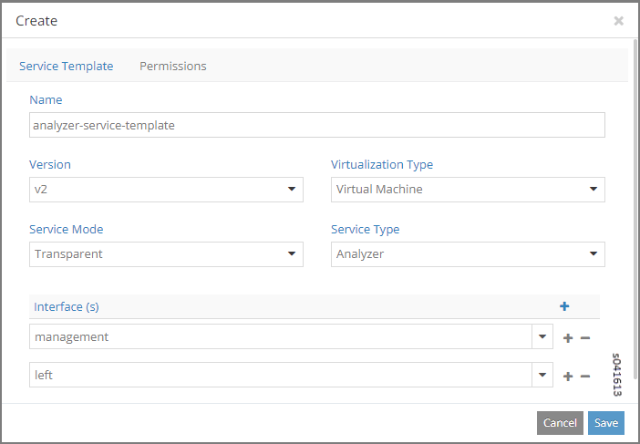
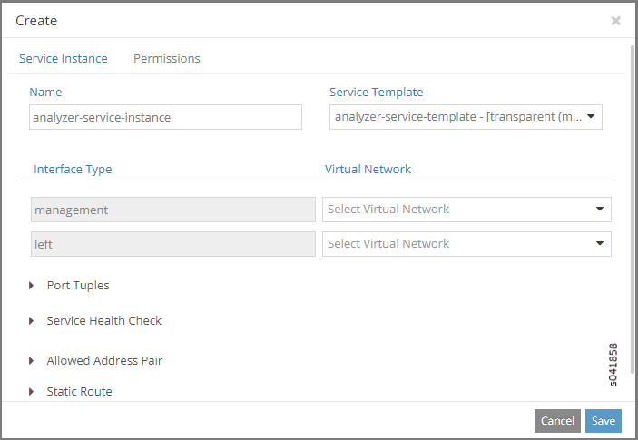
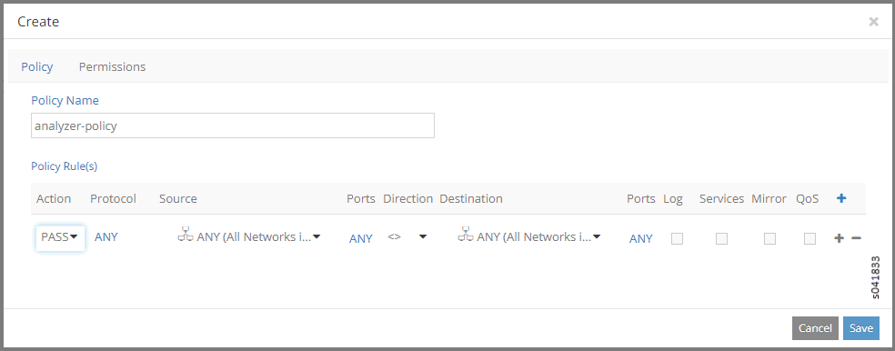

Configuring Traffic Analyzers and Packet Capture for Mirroring
Contrail provides traffic mirroring so you can mirror
specified traffic to a traffic analyzer where you can perform deep
traffic inspection. Traffic mirroring enables you to designate certain
traffic flows to be mirrored to a traffic analyzer, where you can
view traffic flows in great detail.
This section describes how to set up packet
capture to mirror traffic packets to an analyzer.
Traffic Analyzer Images
Before using the Contrail interface to configure traffic analyzers
and packet capture for mirroring, make sure that the following analyzer
images are available in the VM image list for your system. The traffic
analyzer images are enhanced for viewing details of captured packets
in Wireshark. When creating a policy for the traffic analyzer, the
traffic analyzer instance should always have the Mirror to field selected in the policy, do not select the Apply Service field for a traffic analyzer.
analyzer-vm-console-qcow2—Standard traffic
analyzer; should be named analyzer in the image list. This
type of traffic analyzer is always configured with a single interface,
and the interface should be a Left interface.
analyzer-vm-console-two-if qcow2—This
type of traffic analyzer has two interfaces, Left and Management. This traffic analyzer can have any name except
the name analyzer, which is reserved for the single interface
analyzer.
Setting Up Traffic Mirroring Using Configure > Networking >
Services
Follow these steps to set up traffic mirroring using Configure
> Networking > Services.
Access Configure > Services > Service Templates.
The Service Templates screen appears; see Figure 1.
Figure 1: Service Templates
To create a new service template, click the + icon.
The Create window appears. Select the Service Template
tab; see Figure 2.
Figure 2: Create Service Template

Complete the fields by using the guidelines in Table 1.
Table 1: Create Service Template
Fields
Field
Description
Name
Enter a descriptive text name for this service template.
Version
Select v2 from the drop-down list to indicate
that this service template is based on templates version 2, valid
for Contrail 3.0 and later.
Virtualization Type
Select Virtual Machine from the drop-down
list to indicate the virtualization type for mirroring for this template.
Service Mode
Select Transparent from the drop-down list
to indicate that this service template is for transparent mirroring.
Service Type
Select Analyzer from the drop-down list to
indicate that this service template is for a traffic analyzer.
Interface(s)
From the drop-down list, click the check boxes to indicate
which interface types are used for this analyzer service template:
Left
Right
Management
Save
When finished, click OK to commit the changes
Cancel
Click Cancel to clear the fields and start
over.
Create a service instance by clicking the Service
Instances link and clicking the + icon.
The Create window appears; make sure the Service
Instance tab is selected. See Figure 3.
Figure 3: Create Service Instances

Complete the fields by using the guidelines in Table 2.
Table 2: Create Service Instances Fields
Field
Description
Name
Enter a text name for this service instance.
Service Template
Select from a drop-down list of available service templates
the template to use for this service instance, analyzer-service-template
in this example.
Interface Type
Each interface configured in the service template for
this instance appears in a list.
Virtual Network
Select from a drop-down list of available virtual networks
the network for each interface that is configured for the instance.
Save
Click Save to commit your changes.
Cancel
Click Cancel to clear your changes and start
over.
To create a network policy rule for this service instance,
click Configure > Networking > Policies. The Policies window appears. Click the + icon to get to the Create window; see Figure 4.Figure 4: Create Policy
Enter a name for the policy, then click the + icon in
the lower portion of the screen to configure rules for the policy,
see Figure 5.Figure 5: Create Policy Rules

To add policy rules, complete the fields, using the guidelines
in Table 3. Note
When there is a network policy attached to the virtual
network, any conflicting rules configured for the analyzer will not
take effect.
Table 3: Add Rule Fields
Field
Description
Action
Select PASS or DENY as the rule action.
Protocol
Select the protocol for the policy rule, or select ANY.
Source
Select from multiple drop-down lists the source for this
rule, including options under CIDR, Network, Policy, or Security Group.
Ports
Select from a drop-down list the source ports for the
rule.
Direction
Select the direction of flow for the packets to be captured:
<> (bidirectional)
> (unidirectional)
Destination
Select from multiple drop-down lists the destination
for this rule, including options under CIDR, Network, Policy, or Security
Group.
Ports
Select from a list the destination ports for the packets
to be captured.
check boxes
Check any box that applies to this rule: Log, Services,
Mirror, QoS.
Save
Click Save to commit your changes.
Cancel
Click Cancel to clear your changes and start
over.
When finished, click Save.
To verify packet capture, at Configure > Services
> Service Instances, select the analyzer service instance and
click View Console.
The packet capture displays; see Figure 6. The analyzer service VM launches
the Contrail-enhanced Wireshark as it starts and captures the mirrored
packets destined to this service.